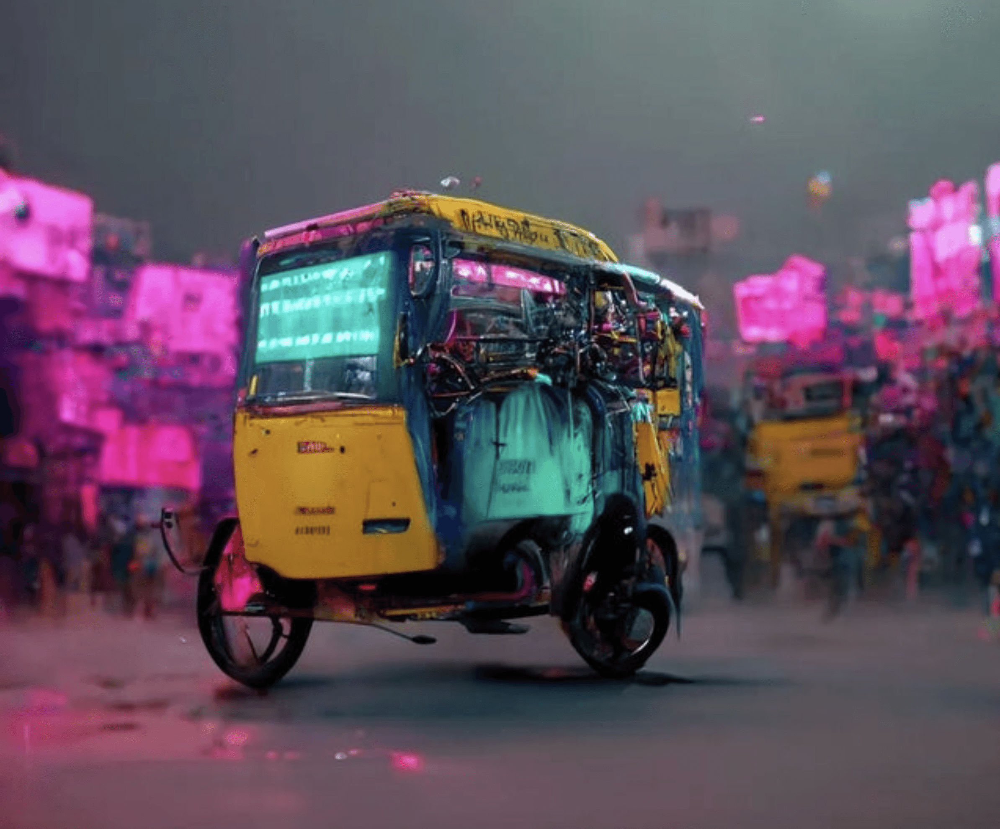
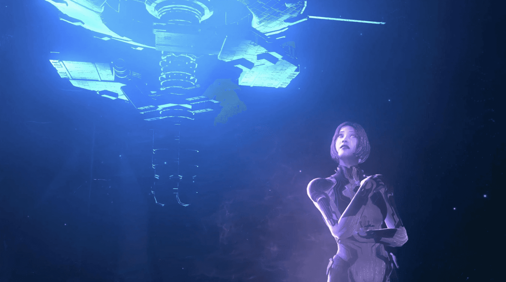

Dear Sid #2: Glorious Purpose
Penned on April 30, 2023.
Welcome to my second editon of Dear Sid. I wrote the first one when the only real purpose in my life was "bas koi job dede". The world had just started to figure out how to respond to the onsetting pandemic. Both I and the world have come a long way since then.
Fast forward 3 years since then, to last week's scooty-ride back home from office when a colleague asked me: "have you found your purpose yet?"
"Yes", I replied without hesitation. I'd had plenty of time to think about what I wanted both for, and from, my life. The rest was left unsaid as the traffic moved us forth, but I'll pen the answer here for myself.
Futurus and Adventus
In the Latin Middle Ages saw both those words used to describe the future.
Futurus refers to something which we can extrapolate from the past. Say if the the GDP of India climbed 8% from last year, you could make a reasonable prediction that it might rise 8% in the coming year again.
Adventus though, is something coming from the future, something that has not yet happened. It has nothing to do with the past, rather it's just an arrival of what has yet to come. For eg: RCB wins the IPL.
Futurus is somewhat predictable, Adventus is unexpected.

I like to think of life in both of those two ways.
- I learn what I can and work towards a future based on it. That's my Futurus.
- I know not what will happen, but still dream of a future that I don't control. This future guides some of my actions today, but it may/may not come true. Adventus.
Futurus / How I live
I push myself and others around me towards a smarter, more creative and deliberate world. I want to help people reach higher levels of growth, fulfilment and joy in their lives. I do this today by helping people learn new things. Often by teaching, other times by funding their courses, etc. The method isn't as important as end result.
I want to help humankind use technology to live better lives, not complicate it further. I want machines to handle the boring stuff, and let people explore life, nature and meaning. This is what fuels my interest in technology and HCI — the foundations of my profession today.
I want to make work better — so fewer people need to see it as means to an end, and more pursue it to contribute to something greater. I will help facilitate a world where people aren't motivated by financial gain, fame or vanity as much as the desire to leave the world better than they found it. Long way to go here.
I want to improve the world on behalf of India, I believe in it despite all its flaws. And while there's a lot to learn and bring back from the rest of the world, I will live my life in service of India just like my parents. Jai Hind!
Adventus / What happens when I die

"If you knew you were going to die, how would you live your life differently?" — Cortana
I left a smaller footprint. I took only what I needed to enjoy my life on the planet, and gave the rest back to where it'd add more value. I didn't leave behind tons of debt, real estate, material possessions, etc. The only thing I left behind were more capable people, hopefully some of whom I had the fortune of helping along the way.
I left a huge impact. I meaningfully improved the world. The whole of my life was greater than the sum of its parts. Before leaving, I asked for forgiveness for the wrongs I did, and people remember me for the good.
I left the world after having seen more than one. Looking at you, Mars.
What do your futurus and adventus look like?